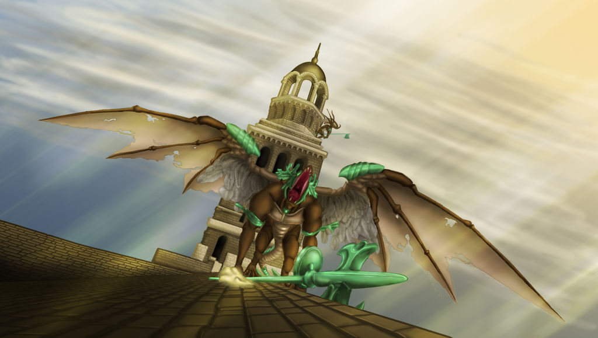

Las Campanas del Despertar

tras escapar del asilo de los no muertos,un cuerva gigante nos lleva al santuario de enlace de fuego
alli el guerrero alicaido nos contará que hay dos campanas del despertar que debemos hacer sonar y que él fallo en hacerlas sonar y por eso se dedica a dar guia a los demás no-muertos
con esto entendemos de que ya otros no-muertos han escapado del asilo y han llegado a lordran para cumplir la profecía pero hasta ahora ninguno ha podido

"él es la personificación de la depresión misma,un guerrero valiente que perdio por completo la voluntad de luchar al ver que la tarea era tan grande y tan imposible, y se permitió a hundirse en el cinismo y ahora su único motivo para seguir vivo es guiar a quienes llegan a lordran."
La Primera Campana del Despertar esta en la Parroquia de los no muertos custodiado por dos gargolas

Las gárgolas se encuentran en la parte más alta de la Parroquia de los no muertos, tras pasar por una habitación llena de Huecos y un Canalizador.

Una vez vencidas estas gargolas tendremos el paso libre para hacer sonar la primera Campana del Despertar y luego comenzar nuestro viaje a Las Profundidades

yendo a la parte mas baja de los burgos de los no-muertos nos encontramos con un demonio de aries quien nos ataca con dos perros,que parece que pudo domesticar,y que tiene la llave que nos lleva a las Profundidades especificamente Cuidad Infestada y a la segunda Campana del Despertar